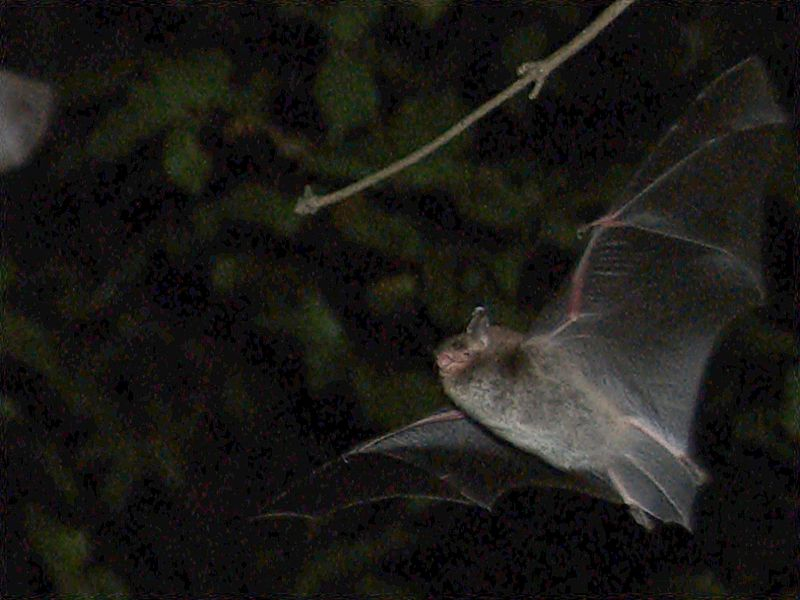

Wasserfledermaus
Myotis daubentonii
Wer sich die Mühe macht in warmen, trockenen Sommernächsten mit Scheinwerfer und Fledermaus-Detektor die Torfstichteiche am Riedlehrpfad aufzusuchen, der wird diese an den Wasserlebensraum angepasste Fledermausart beobachten und hören können. Sie gaukelt tief über dem Gewässer und jagt Insekten aus der Luft oder von der Wasseroberfläche. Manchmal erwischt sie sogar kleine Fische. Während ihres Jagdfluges gibt sie permanent „knatternde“ Laute im Ultraschallbereich ab, die wir nur mit technischer Hilfe für das Menschliche Ohr hörbar machen können. Ihre Tagesquartiere befinden sich oft Kilometer weit entfernt.